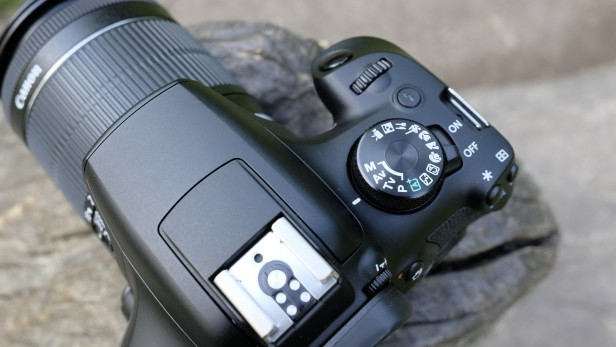
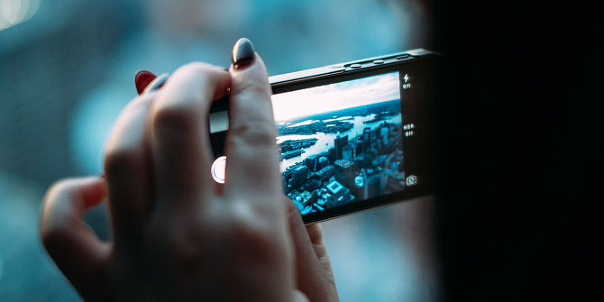
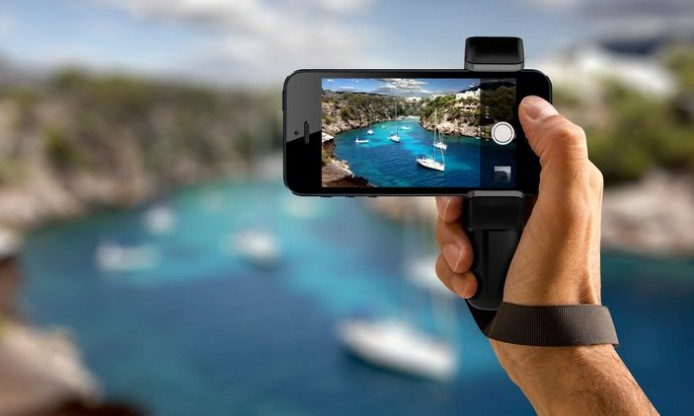
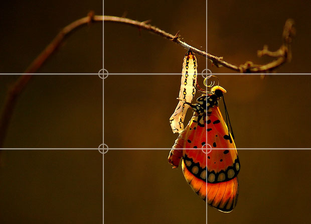

ISO
It is challenging to take good pictures without a good understanding of how ISO works and what it does. Camera ISO is one of the three pillars of photography (the other two being Aperture and Shutter Speed) and every photographer should thoroughly understand it, to get the most out of their equipment. Since this article is for beginners in photography, I will try to explain ISO as simple as I can. Before we go any further, you should first understand how DSLR cameras work.
What is ISO?In very basic terms, ISO is the level of sensitivity of your camera to available light. The lower the ISO number, the less sensitive it is to the light, while a higher ISO number increases the sensitivity of your camera. The component within your camera that can change sensitivity is called “image sensor” or simply “sensor”. It is the most important (and most expensive) part of a camera and it is responsible for gathering light and transforming it into an image. With increased sensitivity, your camera sensor can capture images in low-light environments without having to use a flash. But higher sensitivity comes at an expense – it adds grain or “noise” to the pictures.
Discover the art of photography with everything you need to create stunning stills and cinematic Full HD movies. Capture superb detail with confidence using the 18 Megapixel EOS 1300D, which takes care of all the settings for you, while the all-purpose EF-S 18-55mm zoom lens features an Image Stabilizer for steady shots - then share your creations via Wi-Fi¹ and NFC². Benefit from an 8GB memory card and carry everything safely in Canon’s professional gadget bag.
Don't Blame Your Gear
Don’t Blame Your Gear I won’t say that gear doesn’t matter. It absolutely does matter — but not as much as you think. As they say, a skilled photographer can produce great photos with a crappy camera but a newbie photographer won’t get much good out of professional-grade equipment. It comes down to what we discussed above: light, exposure, composition, angles, perspective, with however much post-processing you want to use. If you can master all of those things, you’ll be able to take great shots with anything, even a smartphone. (In fact, smartphone cameras are great!)
Obviously there are limits to your equipment, and it’s definitely possible to outgrow a certain camera, lens, speedlight, or accessory. Bad gear can hinder you. But the takeaway is that upgrading your gear won’t upgrade your photography skills. The sooner you accept this, the faster you’ll improve and progress. Unless you're one of those admirable people who carries their favourite camera with them at all times, at the ready, chances are that you often watch great photographic opportunities pass by you. (Not quite there yet? Start taking photos with your phone regularly, and in no time, the world will be full of photographic potential!) But nowadays, most of us keep our phones with us all the time, which means most of us have a camera with us all the time too. And because of the advances in smartphone design, that camera does a pretty decent job! Awesome shots are now within your reach, every where you go. You can easily practice your craft – and add to your visual record – every single day.
Rule of Thirds
he “Rule of Thirds” one of the first things that budding digital photographers learn about in classes on photography and rightly so as it is the basis for well balanced and interesting shots. I will say right up front however that rules are meant to be broken and ignoring this one doesn’t mean your images are necessarily unbalanced or uninteresting. However a wise person once told me that if you intend to break a rule you should always learn it first to make sure your breaking of it is all the more effective!
What is the Rule of Thirds?
The basic principle behind the rule of thirds is to imagine breaking an image down into thirds (both horizontally and vertically) so that you have 9 parts. As follows. As you’re taking an image you would have done this in your mind through your viewfinder or in the LCD display that you use to frame your shot. With this grid in mind the ‘rule of thirds’ now identifies four important parts of the image that you should consider placing points of interest in as you frame your image. Not only this – but it also gives you four ‘lines’ that are also useful positions for elements in your photo.